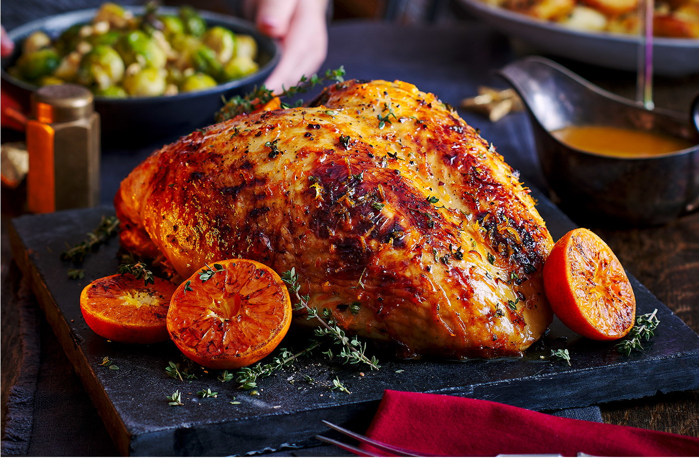

Honey-Basted Roast Turkey

Description
Honey glazed turkey
seasoned with berries and stuffed with onions
Ingredients
- 1 small turkey (10-12 pounds)
- 2 tablespoons of hazelnut or peanut oil
- ½ tea spoon ground sage
- 1/2 tea spoon ground dried spicebush berries or allspice
- Salt and ground pepper to taste
- 1 small bunch wild onions or green onions
- 3-4 table spoons honey
- A decorative string of cranberries and bay leaves (for garnish)
Steps
- Preheat oven to 175 Celsius (350 Fahrenheit)
- Remove giblets from turkey and reserve for gravy if desired
- Rinse turkey and pat dry
- Rub inside and out with oil and season with sage, spicebush berries, salt and pepper
- Stuff neck and body cavities with onions and truss, if desired
- Place turkey in roasting pan
- Roast, allowing 18-20 minutes per pound, until juices run clear with no hint of pink when thigh is pierced
- During the last hour of cooking, baste turkey 2 – 3 times with honey
- A good pan gravy can be made if you are pan roasting the turkey, though if you are spit roasting it you will not have the drippings
- Garnish with string of cranberries, if desired